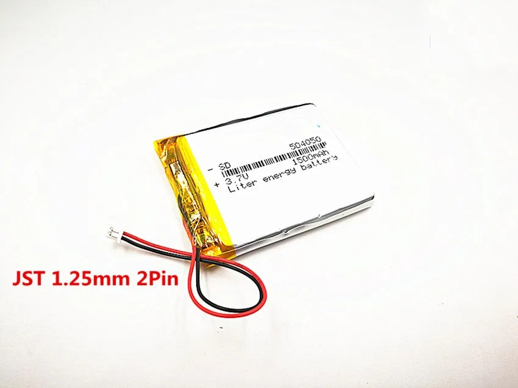
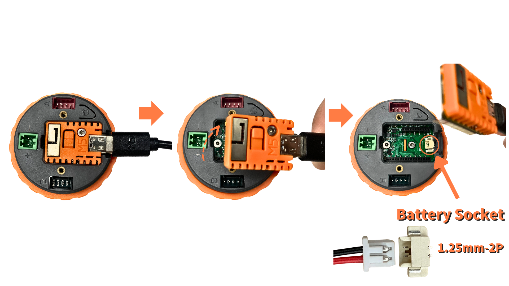

Tools
Screwdrivers, drill, enclosure-safe drill bits, wire cutters, and a wire stripper.
Hardware assembly
Parts list and wiring diagrams
Calibration range
25 kg
Typical precision
1 to 4 g after calibration
Optional feature
Keg filler with spunding valve
The goal is a clean, robust scale with no exposed wiring, suited to brewing environments.
Screwdrivers, drill, enclosure-safe drill bits, wire cutters, and a wire stripper.
Flexible wire, jack connectors, PG7 cable glands, and an RJ9 cable for the platform.
Work with power disconnected. Check 12V polarity before connecting the Dial or the valve.
After assembly, use the software guide to flash the firmware and calibrate the scale.
Wet environment: this project is intended for a garage brewery, but the electronics still need protection. Close the enclosure, use cable glands, and prevent liquid ingress.

The M5Stack Dial provides the ESP32, Wi-Fi, round screen, and rotary encoder. It keeps wiring low and gives the brewer a physical interface that remains usable with wet hands.

The Unit Weight I2C converts the load-cell signal into data the Dial can read. Keep the wiring short and mechanically protected inside the enclosure.

Compact, 25 kg max, with an RJ9 connector that makes integration easier.

The RJ9 cable avoids hard-wiring the scale load cells. It provides a simple connection between the weighing platform and the Unit Weight I2C weight reader.

The enclosure gathers the electronics, protects the connections, and leaves only the useful cables exposed.

The cable gland provides strain relief for the RJ9 cable and helps keep splashes away from the electronics inside the enclosure.

Jack connectors make power and optional valve wiring easier to disconnect for service or transport.

The 12V supply powers the build and shares the same voltage family as the solenoid valve used by the keg-filler option.
Add these parts only if you use keg filling.

The Unit Relay switches the optional 12V solenoid valve for keg filling while keeping the control signal separate from the valve power path.

The spunding valve is only required for keg filling. It remains the mechanical pressure regulator while the scale controls the filling stop by weight.

The normally closed solenoid valve gives the controller a safe way to stop filling. If power is lost, the gas path closes.

Connects the spunding valve to the solenoid valve.
Add this part only if you want to use the scale away from a power outlet.

LiPo battery, 3.7 V, JST 1.25 mm 2-pin, 1500 mAh.
Important: keg filling is not available on battery. The cell cannot drive the 12 V solenoid valve.
Position the M5Stack Dial so the screen and rotary encoder remain accessible. Then mark the required exits: 12V power, RJ9 scale cable, and valve output if the keg filler is installed.
Using the optional battery? Fit it now, before the Dial goes into the enclosure. See Fit The Optional Battery at the end of this section.
Route the RJ9 cable into the enclosure through a cable gland, then connect it to the Unit Weight I2C weight reader.

| Unit Weight Terminal | RJ9 Cable Wire |
|---|---|
A+ |
Green |
A- |
Red |
E- |
Black |
E+ |
White |
Simple integration: keep the RJ9 connector when possible. It lets you replace or disconnect the platform without redesigning the mechanical assembly.
Connect the red Port A on the M5Stack Dial to the Unit Weight I2C Grove connector with the HY2.0-4P cable. This port provides the 5 V supply and the I2C bus required by the weight reader.
| Grove Wire | M5Stack Dial Port A | Unit Weight I2C |
|---|---|---|
| Black | GND |
GND |
| Red | 5V |
5V |
| Yellow | G13 / SDA |
SDA |
| White | G15 / SCL |
SCL |
Before power-up: use the red Port A, not Port B. Check that the connector is fully
seated and that the Unit Weight I2C responds at I2C address 0x26.
The 12V 3A power supply is the main input. Use jack connectors for a clean power entry, then distribute power to the modules that need it.
For keg filling, the relay drives the normally closed 12V solenoid valve. If the system loses power or restarts, the valve returns to the closed position and filling stops.

Connect the black Port B on the M5Stack Dial to the Unit Relay Grove connector with the HY2.0-4P cable. This port provides the 5 V supply and the relay control signal.
| Grove Wire | M5Stack Dial Port B | Unit Relay |
|---|---|---|
| Black | GND |
GND |
| Red | 5V |
5V |
| Yellow | G2 |
DIN |
| White | G1 |
NC |
Before power-up: use the black Port B for the relay. The red Port A remains reserved for the Unit Weight I2C.
Skip this step if the scale always stays connected to the 12 V supply. The battery is described last because it is optional, but it is fitted early: the Dial has to be opened from the back, which is no longer practical once it is mounted in the enclosure. Read this step before starting step 1, and carry it out then.

1.25mm-2P battery socket on the exposed board, next to the USB-C port.+. It only goes in one way; never force it.Polarity: some cells are sold with the red and black wires swapped in the connector
housing. Check them against the + and - markings on the board before
plugging in; a reversed cell destroys the Dial.
Charging: the Dial charges the cell whenever USB-C is connected. Plug it in once before first use, and set the standby delay in the setup portal so the charge is not drained by an idle screen. See Fill in Wi-Fi, Brewfather, and app settings in the Software Installation Guide.
Next step: open the Software Installation Guide, flash the M5Stack Dial, configure Wi-Fi, and run calibration. Final weighing accuracy depends heavily on calibration quality and on the mechanical stability of the platform.